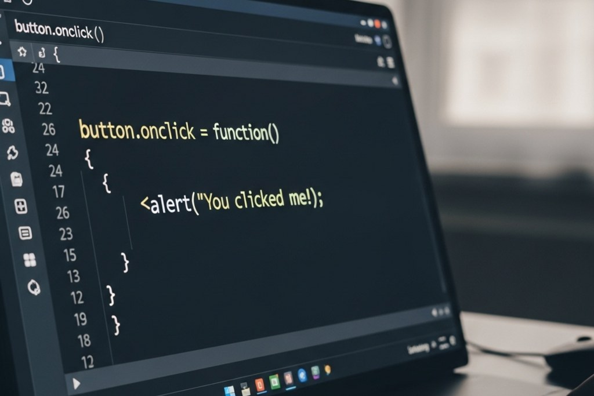

Lessons
This page provides structured lessons designed to help beginners understand the fundamentals of JavaScript and CSS. Each section introduces key concepts in a simplified way and connects them to real examples so users can see how code works in practice.
Instructional Approach
The lessons in CodeStart follow a progressive learning approach where concepts are introduced step by step. Instead of presenting complex ideas all at once, the content is divided into smaller sections that are easier to understand and remember.
Each lesson includes both explanation and example code. This allows users to connect what they read with how it actually appears in programming, which is an important part of learning web development.
Browse Lessons by Topic
Use the buttons below to explore different lesson categories and focus on the topic you want to study. This interactive feature allows users to control what content they see and helps reduce information overload.
JavaScript Basics
JavaScript is the programming language that makes websites interactive. It allows pages to respond to user actions, update content, and create dynamic experiences.
Variables
Variables are used to store data that can be used and changed later in a program. They help developers manage information such as names, numbers, and user input.
let name = "Mayar";
let level = "Beginner";
Functions
Functions allow developers to group code into reusable blocks. This makes programs easier to organize and reduces repetition.
function greetUser() {
console.log("Welcome to CodeStart!");
}
greetUser();
Events
JavaScript can respond to user actions such as clicking a button or submitting a form. This is what makes websites interactive instead of static.
document.querySelector("button").addEventListener("click", function () {
alert("Button clicked!");
});
Why It Matters
JavaScript allows websites to react to users, making them more engaging and useful. Without JavaScript, web pages would not be able to respond dynamically to user actions.
CSS Basics
CSS is used to control the visual appearance of a website. It defines how elements look, including colors, spacing, and layout.
Colors
Colors improve readability and design by helping users distinguish between different parts of a page.
body {
background-color: lightblue;
color: #1e3a8a;
}
Text Styling
CSS allows developers to control how text appears, including size, alignment, and emphasis.
h1 {
font-size: 2em;
text-align: center;
}
Layout
Layout tools such as flexbox help organize content so that pages look structured and easy to navigate.
.container {
display: flex;
gap: 20px;
}
Why It Matters
CSS improves the user experience by making websites visually clear, organized, and easy to use.
Learning Goals
- Understand how JavaScript adds interactivity to a website
- Recognize how CSS controls layout and visual design
- Connect explanations to real code examples
- Prepare for practice activities by reviewing key concepts
Learning in Action
Both JavaScript and CSS work together to create websites that are useful, interactive, and visually appealing. Understanding both is essential for building modern web applications.
